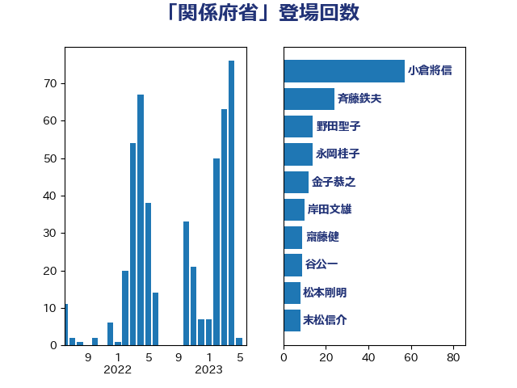

単語「関係府省」

| 武田良太 | 自由民主党 | 21 回 |
| 萩生田光一 | 自由民主党 | 21 回 |
| 上川陽子 | 自由民主党 | 17 回 |
| 斉藤鉄夫 | 公明党 | 14 回 |
| 野田聖子 | 自由民主党 | 14 回 |
| 金子恭之 | 自由民主党 | 12 回 |
| 平井卓也 | 自由民主党 | 10 回 |
| 井上信治 | 自由民主党 | 9 回 |
| 末松信介 | 自由民主党 | 8 回 |
| 小林鷹之 | 自由民主党 | 6 回 |
| 熊田裕通 | 自由民主党 | 6 回 |
| 後藤茂之 | 自由民主党 | 5 回 |
| 林芳正 | 自由民主党 | 3 回 |
| 津島淳 | 自由民主党 | 3 回 |
| 田畑裕明 | 自由民主党 | 3 回 |
| 吉川赳 | 無所属 | 2 回 |
| 坂本哲志 | 自由民主党 | 2 回 |
| 塩川鉄也 | 日本共産党 | 2 回 |
| 大口善徳 | 公明党 | 2 回 |
| 宮崎雅夫 | 自由民主党 | 2 回 |
| 宮路拓馬 | 自由民主党 | 2 回 |
| 岸真紀子 | 立憲民主党 | 2 回 |
| 柚木道義 | 立憲民主党 | 2 回 |
| 梶山弘志 | 自由民主党 | 2 回 |
| 渡辺猛之 | 自由民主党 | 2 回 |
| 田村憲久 | 自由民主党 | 2 回 |
| 竹内真二 | 公明党 | 2 回 |
| 竹谷とし子 | 公明党 | 2 回 |
| 西村康稔 | 自由民主党 | 2 回 |
| 豊田俊郎 | 自由民主党 | 2 回 |
| 野上浩太郎 | 自由民主党 | 2 回 |
| 金城泰邦 | 公明党 | 2 回 |
| 長浜博行 | 無所属 | 2 回 |
| 高村正大 | 自由民主党 | 2 回 |
| 三ッ林裕巳 | 自由民主党 | 1 回 |
| 中西健治 | 自由民主党 | 1 回 |
| 丸川珠代 | 自由民主党 | 1 回 |
| 伊藤孝江 | 公明党 | 1 回 |
| 吉川沙織 | 立憲民主党 | 1 回 |
| 吉田忠智 | 立憲民主党 | 1 回 |
| 塩村あやか | 立憲民主党 | 1 回 |
| 小寺裕雄 | 自由民主党 | 1 回 |
| 小林史明 | 自由民主党 | 1 回 |
| 岬麻紀 | 日本維新の会 | 1 回 |
| 島村大 | 自由民主党 | 1 回 |
| 川田龍平 | 立憲民主党 | 1 回 |
| 平木大作 | 公明党 | 1 回 |
| 朝日健太郎 | 自由民主党 | 1 回 |
| 木村次郎 | 自由民主党 | 1 回 |
| 本村伸子 | 日本共産党 | 1 回 |
| 武井俊輔 | 自由民主党 | 1 回 |
| 浜野喜史 | 国民民主党 | 1 回 |
| 渡辺孝一 | 自由民主党 | 1 回 |
| 熊野正士 | 公明党 | 1 回 |
| 片山さつき | 自由民主党 | 1 回 |
| 片山大介 | 日本維新の会 | 1 回 |
| 牧島かれん | 自由民主党 | 1 回 |
| 田中英之 | 自由民主党 | 1 回 |
| 田名部匡代 | 立憲民主党 | 1 回 |
| 田島麻衣子 | 立憲民主党 | 1 回 |
| 田所嘉徳 | 自由民主党 | 1 回 |
| 福重隆浩 | 公明党 | 1 回 |
| 笠井亮 | 日本共産党 | 1 回 |
| 美延映夫 | 日本維新の会 | 1 回 |
| 菅義偉 | 自由民主党 | 1 回 |
| 葉梨康弘 | 自由民主党 | 1 回 |
| 西田実仁 | 公明党 | 1 回 |
| 谷合正明 | 公明党 | 1 回 |
| 谷川とむ | 自由民主党 | 1 回 |
| 赤池誠章 | 自由民主党 | 1 回 |
| 足立康史 | 日本維新の会 | 1 回 |
| 進藤金日子 | 自由民主党 | 1 回 |
| 高橋千鶴子 | 日本共産党 | 1 回 |
| 鰐淵洋子 | 公明党 | 1 回 |